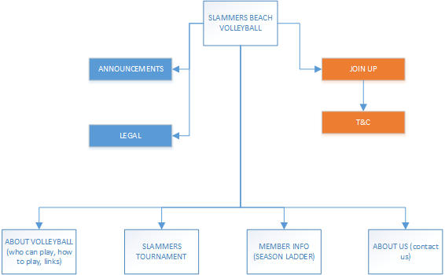

CP1406 - Assignment 1 - Project Plan
Name: Slammers Beach Volleyball Website Plan and Development (April 2017)
Goals
The Slammers Beach Volleyball web site is intended to increase revenue for Slammers Beach Volleyball by promoting the services offered by the company and increasing new and repeat customers.
Success Evaluation
Survey the diversity of existing 100 players per week base to get firm statistics on current players including ratio of 15-30 year olds compared to 35-50 year old age group. Other advertising will be consistent for a period of 12 months (except for including the new web site), so that any change in diversity should be attributable to the site. At the end of this 12 month period (and during), the survey will be repeated and the diversity results will be compared to the previous 12 months. A target has been set of an increace in player base of 50% (150 players per week) with the majority percentage increase to be in the 15-30 year old age category. Monitoring period has been set to 12 months to allow for seasonal adjustments to participation rates and to ensure school holiday periods are included in the surevey results. Marketing of the website to commence no later then early Spring to attract new players in the target age group during the warmer months and before Summer School Holiday period starts.
Target Audience
Local residents, mostly between the ages of 15 to 35 which is the age category expecting to see the most increase in player base and this is who the site is aimed at (the home page). A section of the site will be created for existing members in the 35-50 year old category but this is a secondary function of the site.
Site Flowchart

GitHub Repository slammersBeachVolleyball